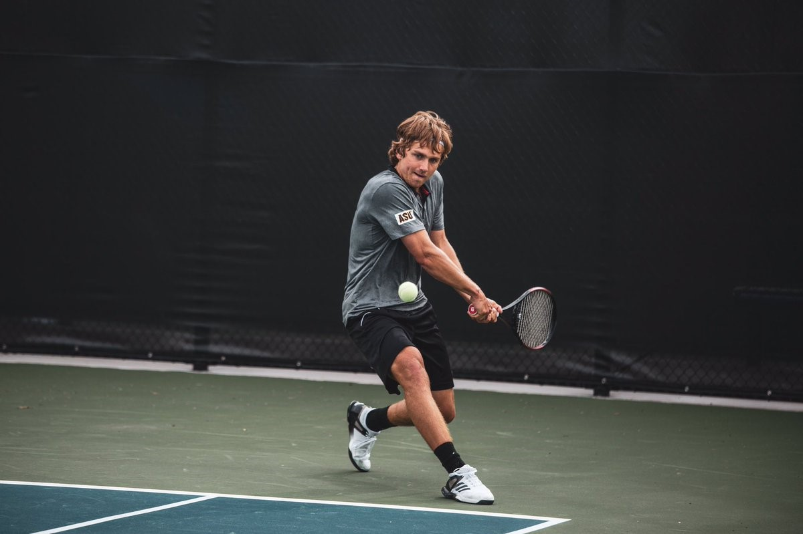

In-browser pose estimation using TensorFlow.js PoseNet. This page includes a still-image demo (tennis backhand) and a live webcam demo — both run entirely on-device and draw keypoints + skeleton overlays without sending any pixels to a server.
The PoseNet demo uses the browser's camera feed as input into TensorFlow.js' PoseNet model. For each frame, PoseNet returns a set of keypoints for major joints (shoulders, hips, knees, etc.). Those keypoints are drawn on top of the video, giving a live view of how the model perceives your posture.
This project sits at the intersection of motion and engineering. It's a playground for thinking about posture, movement quality, and how real-time inference might support training, coaching, or interactive sport experiences in the browser.
This runs PoseNet once against an action shot and overlays detected keypoints + skeleton. (Tip: if you replace the image, keep the same aspect ratio for best alignment.)

Ready. Click “Run PoseNet”.
Runs PoseNet on every frame of your camera feed, fully on-device — nothing is recorded or uploaded. Your browser will ask for camera permission.
Camera off. Click “Start camera”.